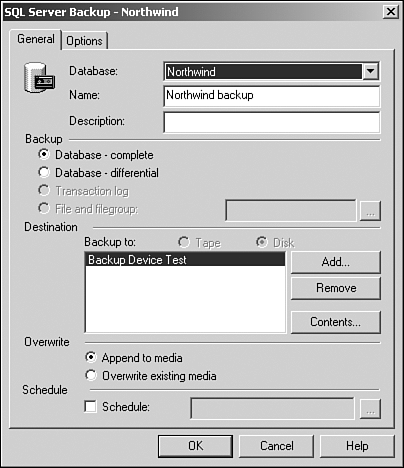
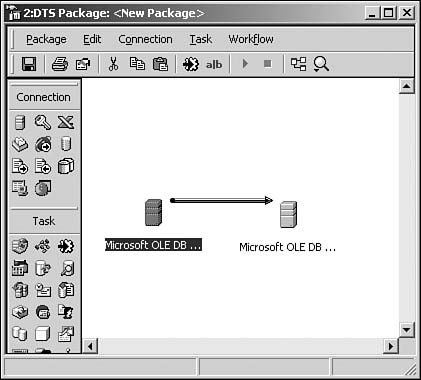

In this chapter you will
Create a dialog box to connect to a new database
Back up and verify a SQL Server database
Restore a SQL Server database
Transfer tables between SQL Server databases
Create a Detach/Attach SQL Server database dialog box
Regardless of the language you are now using for creating your database applications, if you are using SQL Server for your database, you still need to be able to perform basic database tasks on your back-end database. In addition, you will probably want to give your users the ability to perform these tasks without having to use Enterprise Manager.
The way to allow the users to perform some of the common database tasks such as backing up and restoring the database is to take advantage of SQL-Distributed Management Objects (SQL-DMO) and Data Transformation Services (DTS). When you use the Backup/Restore Wizard (see Figure 7.1) in the Enterprise Manager, you are really using SQL-DMO, with the interface created for you.

The same also can be said of the DTS object model, used to create transformation packages and other services (see Figure 7.2.)

As this chapter describes each of the tasks that you will be able to accomplish, you will see more of the various objects, properties, and methods that you can use to accomplish your tasks.